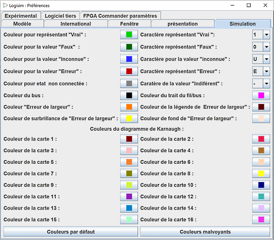

The Simulation tab

Cet onglet comprend des préférences affectant les couleurs de différents composants durant les simulations ainsi que les couleurs utilisées pour les diagrammes de Karnaugh
Dans la partie haute sont définies les couleurs des fils dans les différentes situations de la simulation ainsi que les caractères qui seront utilisés dans l'affichage de l'état des lignes.
Dans la partie basse, ce sont les couleurs utilisées pour représenter les groupes dans les diagrammes de Karnaught.
L'utilisation est simple, Cliquer sur les boutons et un sélecteur de couleur s'affiche. Vous pouvez alors faire votre choix et modifier la couleur.
Deux boutons sont présents, Couleurs par défaut pour revenir aux couleurs par défaut est Couleurs daltoniennes pour un paramétrage facilitant la lecture des personnes ayant des difficultés avec la perception des couleurs.
Next: The Layout tab.